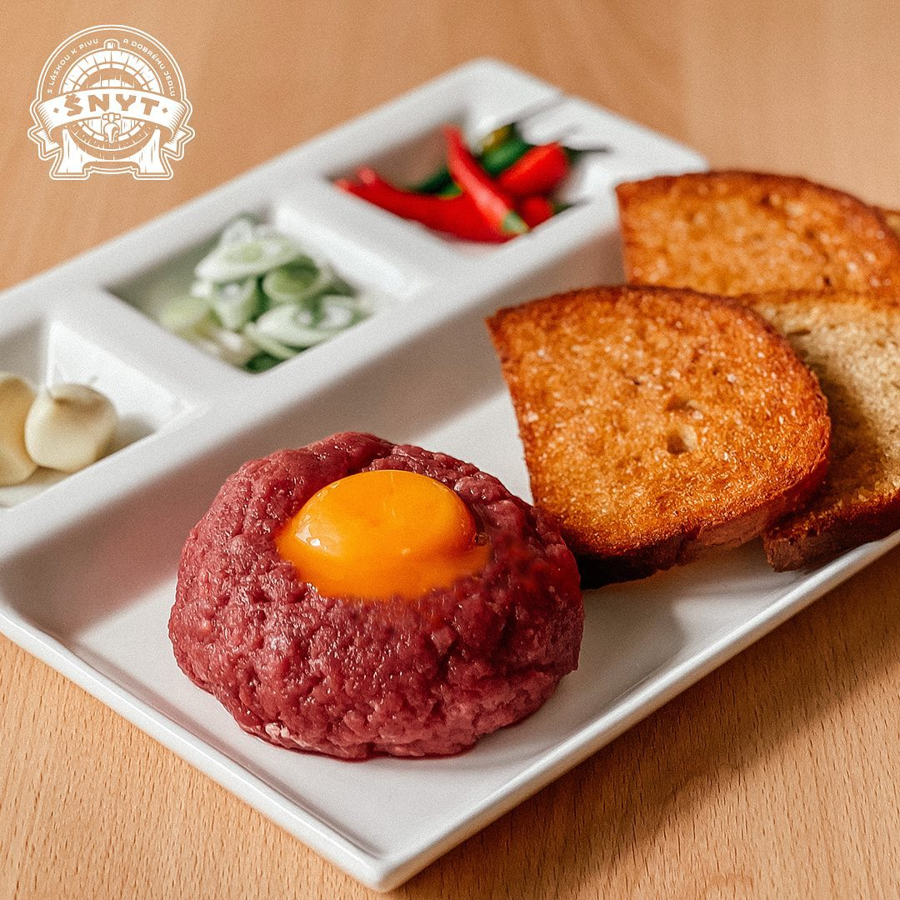

Tatársky biftek podľa @snyt_beerrestaurant — Normy Jedál
Dokonale vyladený tataráčik ❤️ k tomu pohár oroseného @pilsner.urquell.sk 🍺 Jedlo aj pivo vám radi zabalíme so sebou 👌🏻 Robíme aj denné obedové menu #snyt #snytbeerrestaurant #beer #pilsnerurquell #beer #beerlover #bratislava #ocretro #pivo #pub #pivaren #tatarskybiftek #tatarak